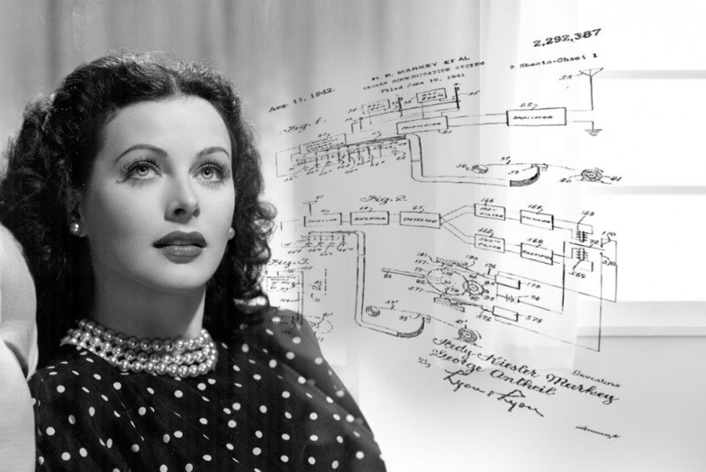

Luciane Nagay Martins, integrante da Turma 7 da {reprograma} e estudante de Análise e Desenvolvimento de Sistemas na FATEC-SP. Trabalhou anteriormente como arquiteta, mas sempre amou tecnologia. Também ama café, viajar e estar com a natureza.
A atriz considerada a "mãe do telefone celular", inventou um sistema de comunicações para as Forças Armadas dos Estados Unidos que serviu de base para a atual telefonia celular.
Atriz e inventora, Lamarr criou o sistema que serviu de base para os telefones celulares. Durante a Segunda Guerra Mundial, criou um sofisticado aparelho de interferência em rádio para despistar radares nazistas.
A ideia surgiu ao lado do compositor George Antheil em frente a um piano. Eles brincavam de dueto, ela repetindo em outra escala as notas que ele tocava, experimentando o controle dos instrumentos. A versão inicial consistia na troca de 88 frequências e era feito para despistar radares. Em agosto de 1942, foi patenteado.
A ideia do aparelho de frequência de Lamarr e Antheil serviu de base para a moderna tecnologia de comunicação usada em telefones celulares.
Luciane Nagay Martins, integrante da Turma 7 da {reprograma} e estudante de Análise e Desenvolvimento de Sistemas na FATEC-SP. Trabalhou anteriormente como arquiteta, mas sempre amou tecnologia. Também ama café, viajar e estar com a natureza.